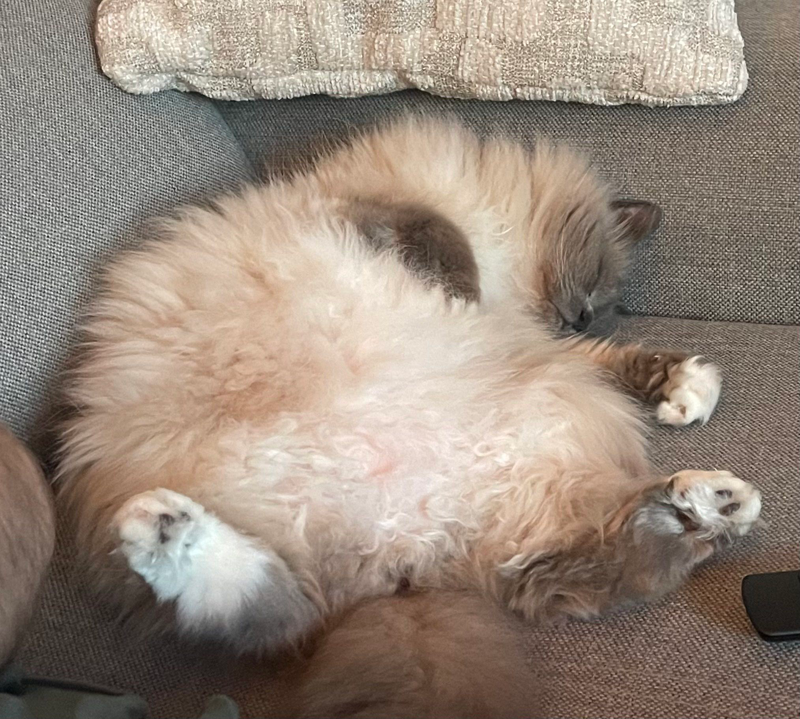
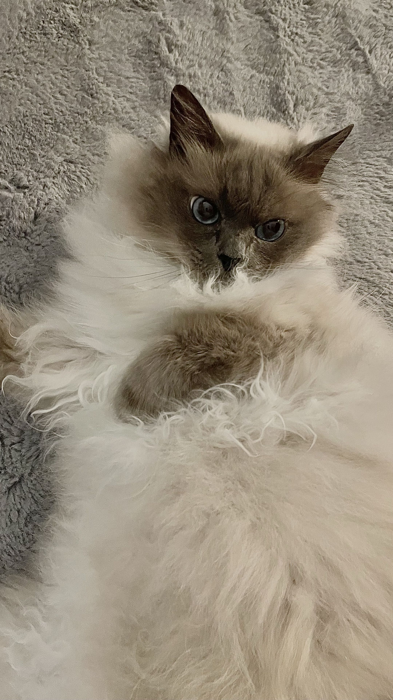
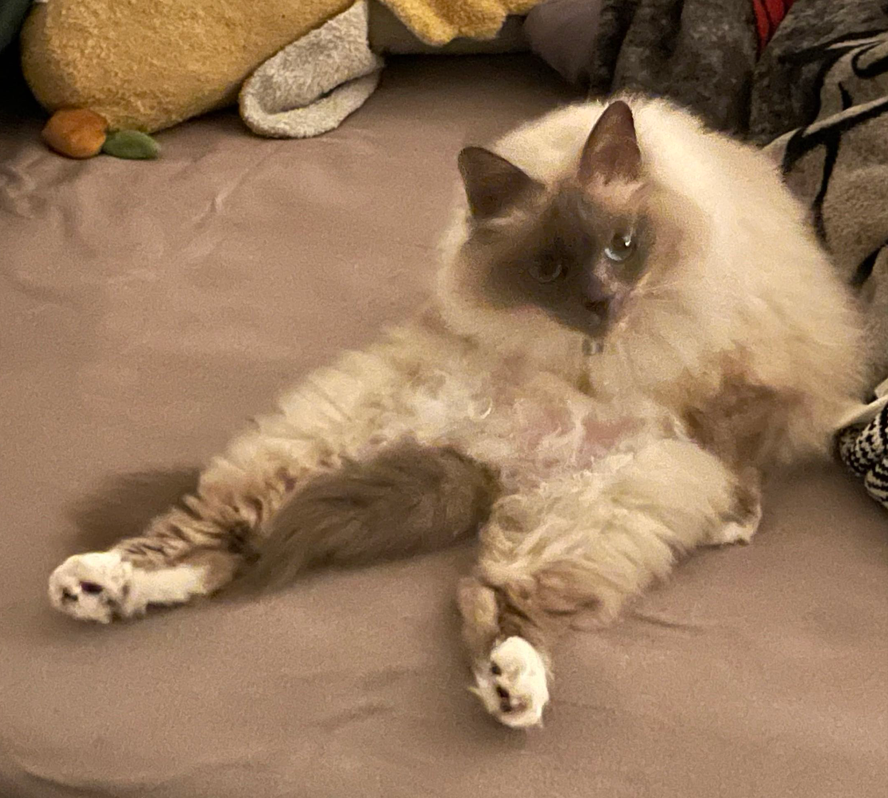
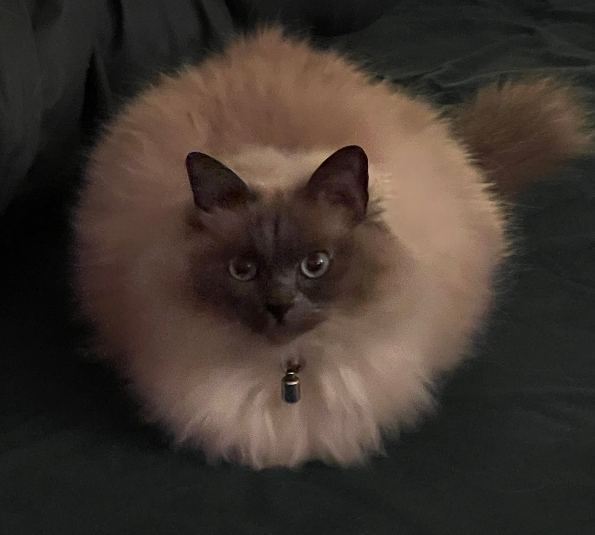

Sleeping
I can sleep anywhere, in any position, and look exactly like a fluffy carpet while doing it.
Hello, I'm
7-year-old Birman cat, part-time carpet, full-time chaos. Not the best at being a cat, but I'm doing my best.
Get in touch
I'm Milka, a 7-year-old Birman cat with a lot to say. I'm very talkative, very expressive, and yes, occasionally a little judgmental.
My one brain cell and I take turns being in charge. Some days I stare at a wall for ten minutes straight. Other days the zoomies hit and I fly through the whole flat, bounce off the sofa and forget halfway why I started running.
I'm also a little clumsy. Sometimes I miss a jump, sometimes I slide off the sofa in my sleep, and sometimes I trip over absolutely nothing. Being a cat is harder than it looks, but I'm giving it my all.

I can sleep anywhere, in any position, and look exactly like a fluffy carpet while doing it.

Thorough grooming with a sprinkle of aerobics. My legs go everywhere. It works, somehow.

Other cats make loaves. I go all the way and become a full, perfectly round ball.
I will judge your message, but I will read it.
hello@example.com